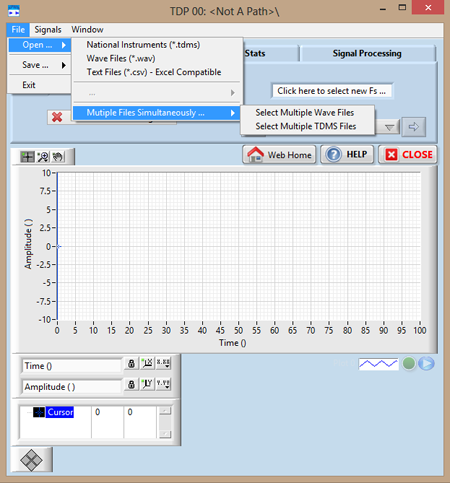
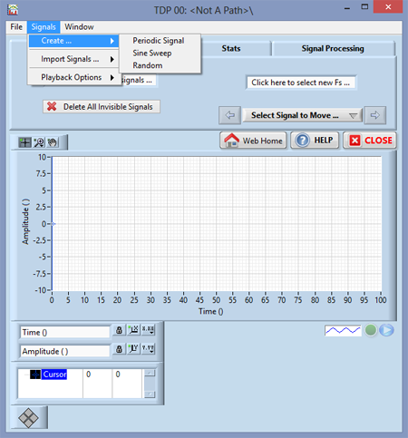
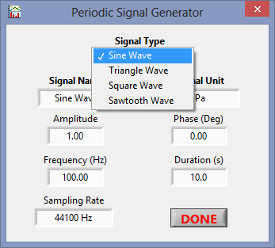
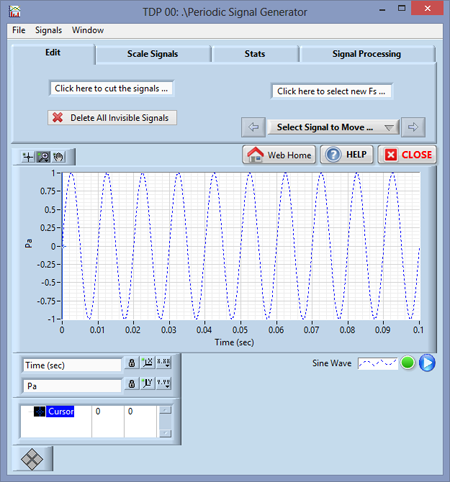
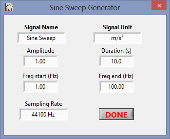
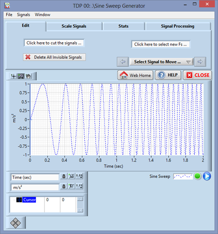
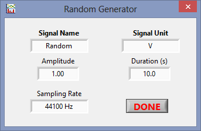
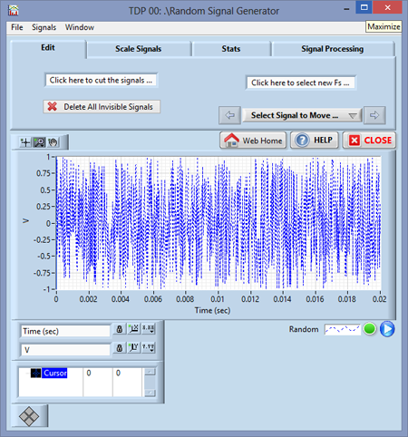

Screenshots
Screen shots of the two post processing window that can be created by any Time Data Processing window are shown below
- FFT Window Showing a 100Hz to 10000Hz Sine Sweep Response
- Time Frequency Analysis Window


Open source software for all your signal processing needs!
Signal Processing Workbench (SPWB) is an easy-to-use software to perform signal processing. It's a free software for personal use, but if you find it useful and/or use it every day, a donation is always welcome if you want to help us contine to develop such softwares!
The SPWB can load time data signals from wave files (.wav), .tdms, and some text-based files (.csv). Once the time signal is loaded into SPWB it can easily be edited in various ways, such as increasing amplitude, cutting/trimming sections, filtering and easily comparing different time signals. Furthermore, it can also create frequency spectra and analyze energy level in the signal. Multiple spectra from different signals can be combined and compared in various ways.
The SPWB software has been designed to be very easy-to-use even for those without prior signal processing experience. It is meant to be used as a:
The SPWB software can be installed in two different ways depending on the user preference:
The signal processing software can be customized upon request for any institution, agency or private company. The customization can include personalized color schemes and logos for the company and limited or added functions depending on the individual requirements. These customizations are typically done at a very low/reasonable cost depending on the number of licenses and how much customization is required.
Here at SPWB we are always open to new opportunities. If you have any further data processing needs not addressed by the software, feel free to contact us at AvantGardeSIT@gmail.com to see if we can develop software more tailored to your specific needs. Again, development costs are minimal due to our small, dynamic team.
Screen shots of the two post processing window that can be created by any Time Data Processing window are shown below
Simply select the “File” menu on the top left side of the windows and select one of the file types. Three file types are fully supported;

Select the “Signals” menu and then the "Create ..." sub menu. Three types of signals can be created;






